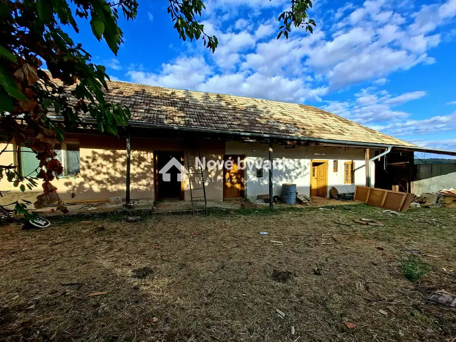
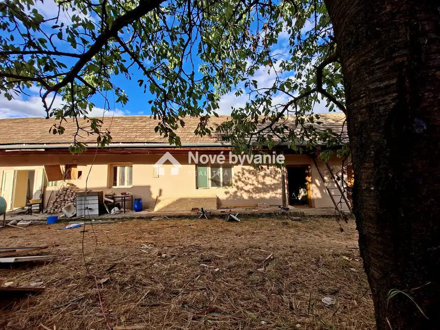
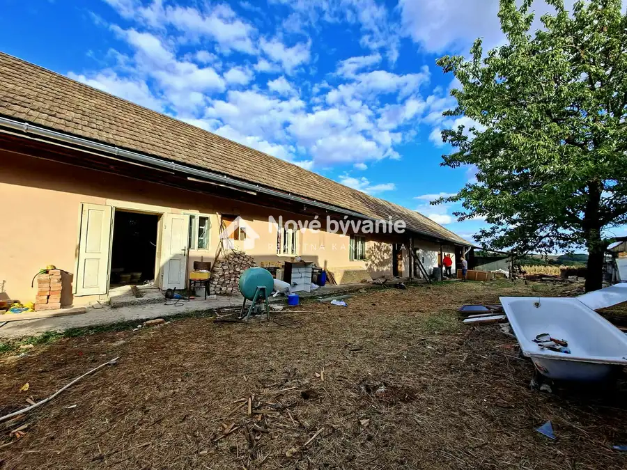
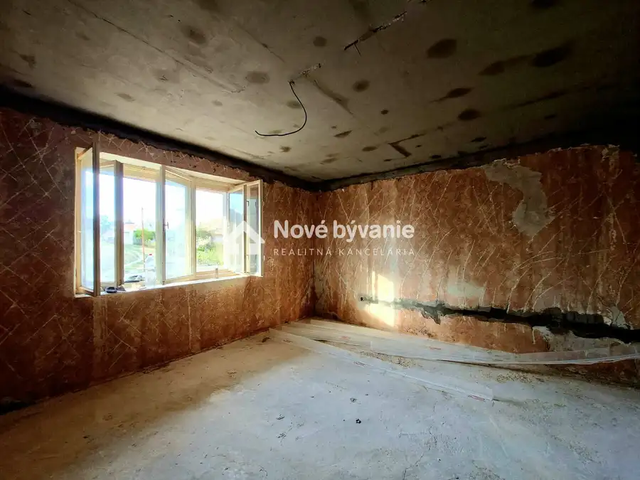
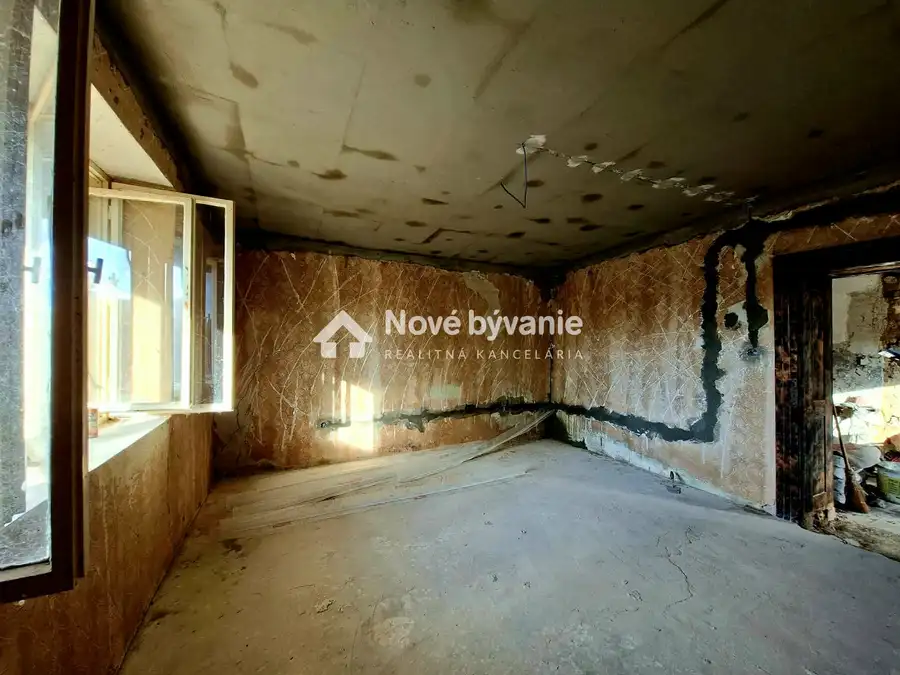
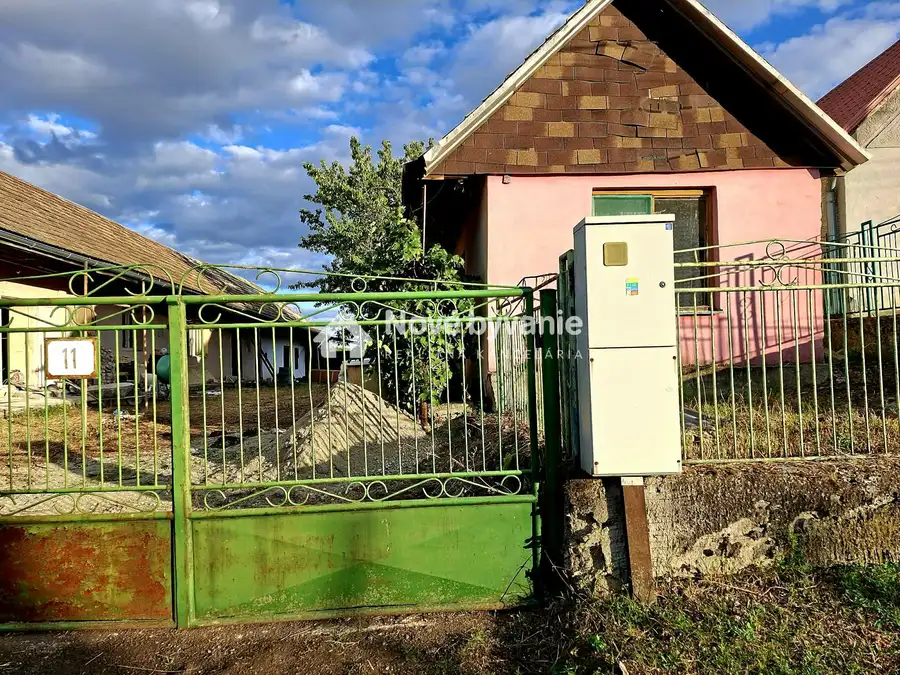
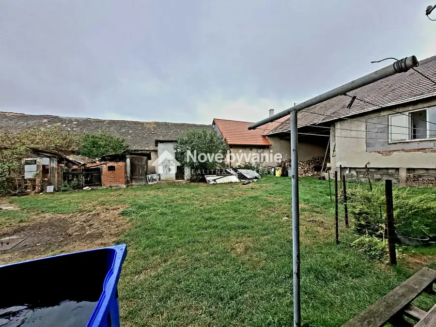
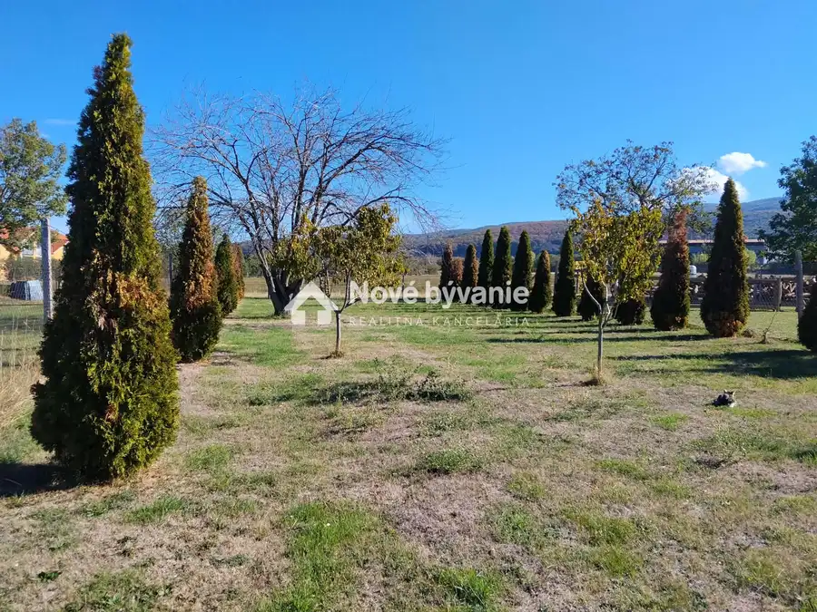
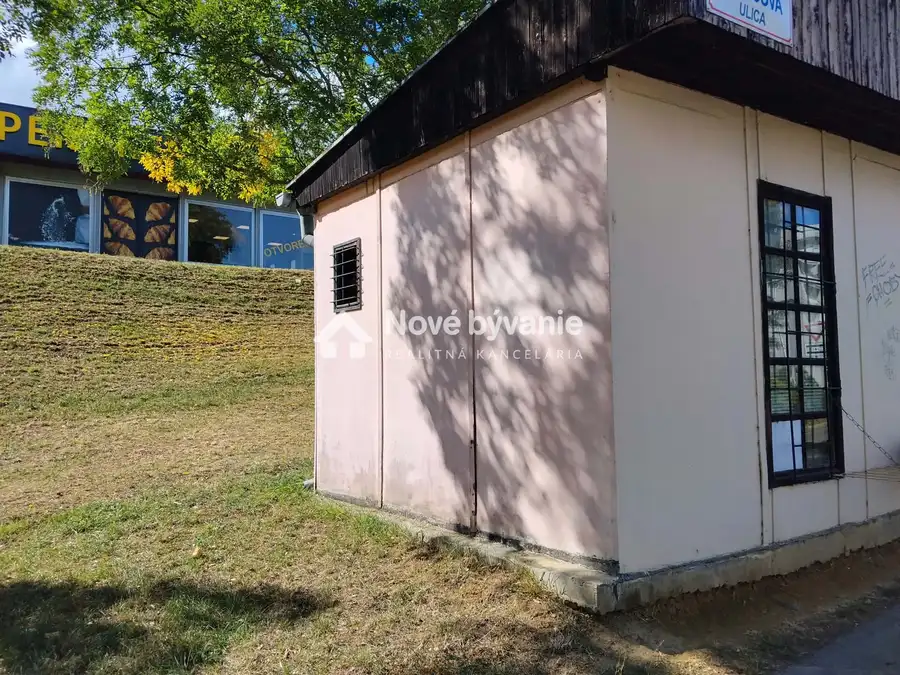

Predaj, Chalupa v tichej obci-Kamenné Kosihy (N001-13-MAOLa)
Kamenné Kosihy






- StavPôvodný stav
- VlastníctvoOsobné
O nehnuteľnosti
Ponúkame na predaj starší 3-izbový rodinný dom v tichej obci Kamenné Kosihy, vhodný na chalupárčenie, prípadne aj na celoročné bývanie. Dom je v pôvodnom stave. Pri predaji už bude kompletne nová elektrika a osieťkované steny na izbách. Na dvore sa nachádza studňa s úžitkovou vodou. Obecná voda cca 0,5m za plotom. Dom má rozlohu cca 149m2 a k domu prislúchajú ďaľšie miestnosti, využívané ako komora a dielňa. Dvor má rozlohu viac ako 1000m2. Na dvore sa nachádza malá letná kuchyňa.Základné informácie:Výmera dom: 149m2Výmera dielňa,komora: 62m2Výmera dvor: 1085m2Elektrika: áno ( kompletne nová )Kanalizácia: nie Voda: 0,5m od plota Výhody: Dokonalý relaxRaj pre hubárov a turistovV blízkosti obce Hrušov Cena: 25 000€Kontakt: Matúš Olajec0948038797olajec@novebyvaniereality.sk Cena je vrátanie provízie a kompletného právneho servisu. S financovaním kúpy Vám radi pomôžeme prostredníctvom nášho finančného poradcu.
Parametre
- Druh
- Chalupa, rekreačný domček
- Dátum zverejnenia
- 13. 09. 2026
- Plocha pozemku
- 0 m²
- Stav nehnuteľnosti
- Pôvodný stav
- Typ
- Predaj
- Vlastníctvo
- Osobné
- Úžitková plocha
- 0 m²
Kde to je


Mohlo by Vás zaujímať

DomNové 179 990 €Predaj,2 domy s veľkorysým pozemkom-Dobrá Niva(N002-12-MAOLa) Dobrá Niva
PozemokNové 53 000 €Predaj, Stavebný slnečný pozemok 600 m2 -Žitavany (N006-14-MAOLa) Žitavany
Komerčné priestoryNové 9 500 €Predaj, Obchodný stánok Nitra - Klokočina (N004-15-MAOLa) Nitra